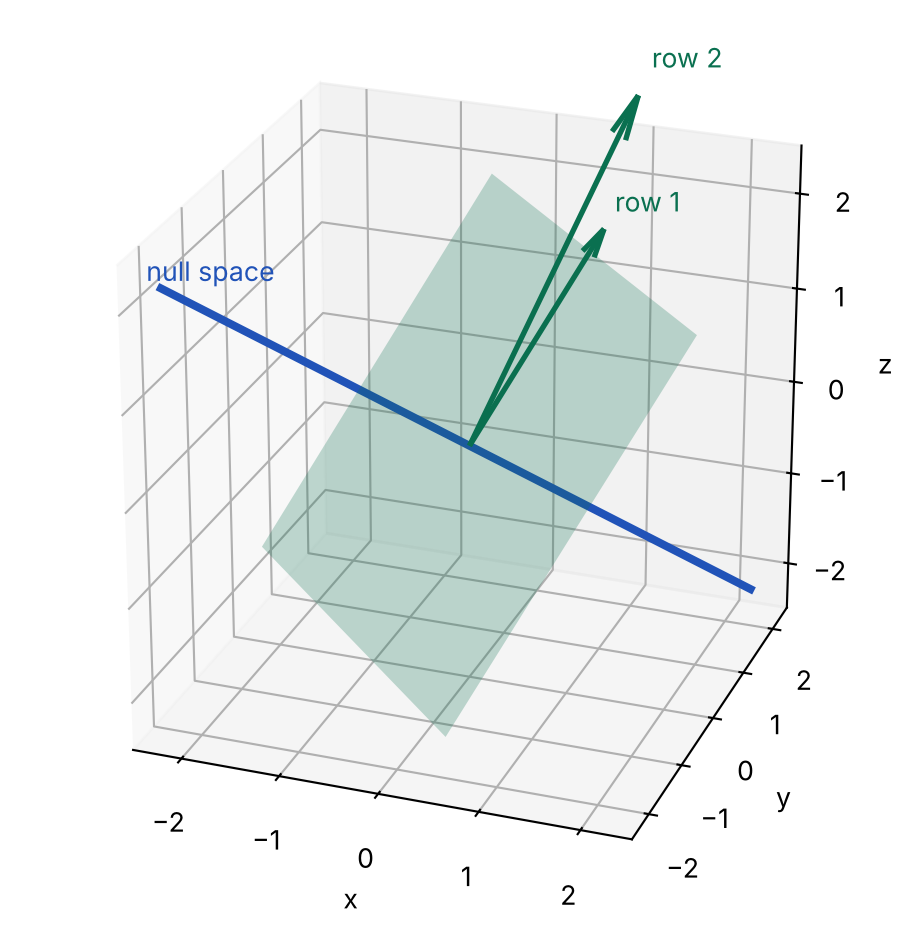

Every \(m \times n\) matrix comes with four subspaces. Two of them have appeared already without names: the right-hand sides \(\vect{b}\) for which \(\M{A}\vect{x} = \vect{b}\) can be solved, and the solutions of \(\M{A}\vect{x} = \zerovec\) (Chapter 10). This chapter names all four, finds bases for them by row reduction, and shows how their dimensions are tied together by the rank. Together they answer every question about \(\M{A}\vect{x} = \vect{b}\): whether it has a solution, and if so, what all the solutions are.
16.1 Build intuition
The span explorer is showing the three columns of \[
\M{A} = \mat{1 & 0 & 1 \\ 2 & 1 & 3 \\ 1 & 2 & 3}.
\] Their span is the column space of \(\M{A}\): all the vectors \(\M{A}\vect{x}\) that the matrix can produce.
The column space is a plane, not all of space. What does the app say about the relation between the columns? That relation is a vector \(\vect{x}\) with \(\M{A}\vect{x} = \zerovec\).
\(\vect{b} = (1, 5, 7)\T\) is in the column space, so \(\M{A}\vect{x} = \vect{b}\) has solutions. Change one entry of \(\vect{b}\). Can it still be reached?
16.2 The ideas
The column space
The column space of \(\M{A}\), written \(C(\M{A})\), is the span of its columns. Since \(\M{A}\vect{x}\) is a combination of the columns with coefficients from \(\vect{x}\), it is the set of all vectors \(\M{A}\vect{x}\). It is a subspace of \(\R^m\) (the columns have \(m\) entries), and
ImportantSolvability
\(\M{A}\vect{x} = \vect{b}\) has a solution exactly when \(\vect{b}\) is in the column space of \(\M{A}\).
A basis for \(C(\M{A})\) is given by the pivot columns of \(\M{A}\) itself (not of its echelon form), as in Chapter 15. So the dimension of the column space is the rank \(r\).
The null space
The null space of \(\M{A}\), written \(N(\M{A})\), is the set of all solutions of \(\M{A}\vect{x} = \zerovec\). It is a subspace of \(\R^n\) (the solutions have \(n\) entries): adding two solutions, or scaling one, gives another solution (Chapter 10, Exercise 5). It contains every dependence relation between the columns, and it is \(\{\zerovec\}\) exactly when the columns are independent.
To find a basis, reduce \(\M{A}\) to reduced row echelon form, and write the solutions in terms of the free variables as in Chapter 12: \[
\vect{x} = s\,\vect{h}_1 + t\,\vect{h}_2 + \cdots,
\] with one vector \(\vect{h}_i\) for each free variable. These vectors are a basis for \(N(\M{A})\). (They are independent because each has a 1 in the position of its own free variable, where the others have 0.) So the dimension of the null space, called the nullity, is the number of free variables, \(n - r\).
Rank–nullity
Every column of \(\M{A}\) either has a pivot or belongs to a free variable. Counting the columns both ways gives the rank–nullity theorem: \[
\operatorname{rank}\M{A} + \operatorname{nullity}\M{A} = n,
\tag{16.1}\] the number of columns. In terms of the transformation \(\vect{x} \mapsto \M{A}\vect{x}\) from \(\R^n\) to \(\R^m\): the dimensions that are kept (\(r\), the dimension of the column space) plus the dimensions that are squashed to nothing (the nullity) add up to the dimensions you started with. A \(3 \times 3\) matrix of rank 2 squashes space onto a plane, and a whole line, its null space, is squashed onto the origin.
NoteExample 1: counting with rank–nullity
A \(5 \times 7\) matrix has rank 4. What are the dimensions of its four subspaces? Can \(\M{A}\vect{x} = \vect{b}\) be solved for every \(\vect{b}\)?
Solution. With \(m = 5\), \(n = 7\) and \(r = 4\): the column space and row space have dimension 4, the null space has dimension \(7 - 4 = 3\), and the left null space has dimension \(5 - 4 = 1\). The column space is a 4-dimensional subspace of \(\R^5\), not all of it, so \(\M{A}\vect{x} = \vect{b}\) has no solution for most \(\vect{b}\). When it does have one, it has infinitely many, with 3 free parameters.
The row space and the left null space
Applying the same ideas to \(\M{A}\T\) gives two more subspaces.
The row space\(C(\M{A}\T)\) is the span of the rows of \(\M{A}\), a subspace of \(\R^n\). Row operations replace rows by combinations of rows, so they don’t change it, and the non-zero rows of the echelon form are a basis. So the row space also has dimension \(r\): the number of independent rows equals the number of independent columns. This is not obvious at all, but it falls out of elimination.
The left null space\(N(\M{A}\T)\) is the set of solutions of \(\M{A}\T\vect{y} = \zerovec\), a subspace of \(\R^m\). Each such \(\vect{y}\) is a combination of the rows of \(\M{A}\) that adds up to zero, a dependence relation between the rows. By rank–nullity for \(\M{A}\T\), its dimension is \(m - r\).
Subspace
Lives in
Dimension
Basis from
column space \(C(\M{A})\)
\(\R^m\)
\(r\)
pivot columns of \(\M{A}\)
null space \(N(\M{A})\)
\(\R^n\)
\(n - r\)
one vector per free variable
row space \(C(\M{A}\T)\)
\(\R^n\)
\(r\)
non-zero rows of the echelon form
left null space \(N(\M{A}\T)\)
\(\R^m\)
\(m - r\)
null space of \(\M{A}\T\)
NoteExample 2: all four subspaces
Find bases for the four fundamental subspaces of \[
\M{A} = \mat{1 & 2 & 0 & 1 \\ 2 & 4 & 1 & 4 \\ 3 & 6 & 1 & 5},
\] and check the dimensions against the table.
Solution. Here \(m = 3\) and \(n = 4\). Reduce: \[
\M{A}
\xrightarrow[R_3 \,\leftarrow\, R_3 - 3R_1]{R_2 \,\leftarrow\, R_2 - 2R_1}
\mat{1 & 2 & 0 & 1 \\ 0 & 0 & 1 & 2 \\ 0 & 0 & 1 & 2}
\xrightarrow{R_3 \,\leftarrow\, R_3 - R_2}
\mat{1 & 2 & 0 & 1 \\ 0 & 0 & 1 & 2 \\ 0 & 0 & 0 & 0}.
\] This is already the reduced form. The pivots are in columns 1 and 3, so \(r = 2\).
Column space: the pivot columns of \(\M{A}\), \((1, 2, 3)\T\) and \((0, 1, 1)\T\). Dimension 2: a plane in \(\R^3\).
Null space: the free variables are \(x_2 = s\) and \(x_4 = t\), and the rows give \(x_1 = -2s - t\) and \(x_3 = -2t\). So \[
\vect{x} = s\mat{-2 \\ 1 \\ 0 \\ 0} + t\mat{-1 \\ 0 \\ -2 \\ 1},
\] and these two vectors are a basis. Dimension \(n - r = 2\).
Row space: the non-zero rows of the echelon form, \((1, 2, 0, 1)\) and \((0, 0, 1, 2)\). Dimension 2.
Left null space: row 3 of \(\M{A}\) is row 1 plus row 2, so \(\vect{y} = (1, 1, -1)\T\) gives \(\M{A}\T\vect{y} = \zerovec\). Dimension \(m - r = 1\), so this vector is a basis.
Check the right angles: \((1, 2, 0, 1) \cdot (-2, 1, 0, 0) = 0\) and \((0, 0, 1, 2) \cdot (-1, 0, -2, 1) = 0\), and similarly for the other two pairs. And \((1, 1, -1) \cdot (1, 2, 3) = 0\) and \((1, 1, -1) \cdot (0, 1, 1) = 0\). ✓
Right angles between the subspaces
Write out \(\M{A}\vect{x} = \zerovec\) row by row. Each equation says that a row of \(\M{A}\), dotted with \(\vect{x}\), gives zero. So every vector in the null space is perpendicular to every row, and so to every combination of rows, as Figure 16.1 shows for a \(2 \times 3\) matrix:
ImportantOrthogonality
The null space of \(\M{A}\) is at right angles to the row space of \(\M{A}\). In the same way, the left null space is at right angles to the column space.
Show the code for this figure
import numpy as npimport matplotlib.pyplot as pltr1, r2 = np.array([1, 1, 2]), np.array([1, 2, 3])n = np.array([-1, -1, 1])fig = plt.figure(figsize=(5.5, 5))ax = fig.add_subplot(projection="3d")u1 = r1 / np.linalg.norm(r1) # two perpendicular directions in the planeu2 = np.cross(n, r1); u2 = u2 / np.linalg.norm(u2)s, t = np.meshgrid(np.linspace(-2.2, 2.2, 2), np.linspace(-2.2, 2.2, 2))X, Y, Z = (s[..., None] * u1 + t[..., None] * u2).transpose(2, 0, 1)ax.plot_surface(X, Y, Z, color="#0a7050", alpha=0.25)for r, lab in ((r1, "row 1"), (r2, "row 2")): ax.quiver(0, 0, 0, *r, color="#0a7050", arrow_length_ratio=0.12, lw=2) ax.text(*(r *1.08), lab, color="#0a7050")ax.plot(*np.outer([-2.2, 2.2], n).T, color="#2153b8", lw=3)ax.text(*(n *2.3), "null space", color="#2153b8")ax.set_xlabel("x"); ax.set_ylabel("y"); ax.set_zlabel("z")for f in (ax.set_xlim, ax.set_ylim, ax.set_zlim): f(-2.5, 2.5)ax.set_box_aspect((1, 1, 1)) # equal scales, so right angles look rightax.view_init(elev=25, azim=-70)plt.tight_layout()plt.show()

Figure 16.1: For the matrix with rows (1, 1, 2) and (1, 2, 3), the row space (the green plane spanned by the two rows) and the null space (the blue line along (−1, −1, 1)) meet at right angles. Every vector in space splits into a piece in each.
Because the dimensions add up (\(r + (n - r) = n\)), the row space and the null space together fill \(\R^n\): every vector splits uniquely into a piece in the row space and a piece in the null space (Chapter 17 makes this precise). Similarly the column space and left null space split \(\R^m\). These four subspaces, and the right angles between them, are the subject of the “fundamental theorem of linear algebra”.
The structure of every solution
Putting this together with Equation 10.1: if \(\vect{b}\) is in the column space, then every solution of \(\M{A}\vect{x} = \vect{b}\) is \[
\vect{x} = \vect{x}_p + \vect{x}_n,
\] a particular solution \(\vect{x}_p\) plus any vector \(\vect{x}_n\) in the null space. The solution is unique exactly when the null space is just \(\{\zerovec\}\), that is, when \(r = n\).
NoteExample 3: every solution
For \(\M{A}\) in Example 2, solve \(\M{A}\vect{x} = (1, 4, 5)\T\).
Solution. First, is \(\vect{b} = (1, 4, 5)\T\) in the column space? It must be at right angles to the left null space, and \((1, 1, -1) \cdot (1, 4, 5) = 0\), so it is. (Equivalently, \(b_3 = b_1 + b_2\), matching the relation between the rows.) Reducing \([\M{A} \mid \vect{b}]\) with the same steps gives \[
\amat{rrrr|r}{1 & 2 & 0 & 1 & 1 \\ 0 & 0 & 1 & 2 & 2 \\ 0 & 0 & 0 & 0 & 0}.
\] Setting the free variables to zero gives the particular solution \(\vect{x}_p = (1, 0, 2, 0)\T\). So every solution is \[
\vect{x} = \mat{1 \\ 0 \\ 2 \\ 0} + s\mat{-2 \\ 1 \\ 0 \\ 0} + t\mat{-1 \\ 0 \\ -2 \\ 1},
\] a particular solution plus the null space: a plane of solutions in \(\R^4\).
16.3 In code
SciPy’s null_space and orth, and MATLAB’s null and orth, return bases for the null space and column space. They give orthonormal bases (perpendicular vectors of length 1, Chapter 17), computed from the singular value decomposition, so they look different from the bases found by hand. They span the same subspaces, which you can check by testing that \(\M{A}\) times each null space vector is zero.
A= [1201;2414;3615];r=rank(A)N=null(A);% columns: a basis for N(A)size(N,2) % the nullitynorm(A*N) % zero (up to rounding): they solve Ax = 0size(orth(A),2) % dimension of the column spacenull(A') % left null space: a multiple of (1, 1, -1)
r =
2
ans =
2
ans =
7.5369e-16
ans =
2
ans =
-0.5774
-0.5774
0.5774
The exact value of norm(A * N) depends on your computer; it is always tiny. null(A, 'r') gives the whole-number basis found by hand.
16.4 Check your understanding
TipA \(4 \times 4\) matrix has a null space of dimension 1. What is its rank? Is it invertible?
Rank \(4 - 1 = 3\), so it is not invertible.
TipWhy is every vector in the null space perpendicular to every row?
\(\M{A}\vect{x} = \zerovec\) says, row by row, that each row dotted with \(\vect{x}\) is zero.
TipCan a \(3 \times 5\) matrix have a column space of dimension 4?
No. The column space lives in \(\R^3\), and its dimension is the rank, which is at most 3.
16.5 Key ideas
Every matrix has four fundamental subspaces: the column space and the null space of \(\M{A}\), and the row space and the left null space, which are the column space and null space of \(\M{A}\T\).
The column space is the set of reachable right-hand sides \(\vect{b}\); its basis is the pivot columns of \(\M{A}\).
The null space is the set of solutions of \(\M{A}\vect{x} = \zerovec\); its basis comes from the free variables.
Rank–nullity: for an \(m \times n\) matrix, the rank plus the dimension of the null space equals \(n\), the number of unknowns.
The row space and the null space are at right angles. Every solution of \(\M{A}\vect{x} = \vect{b}\) is a particular solution plus any vector in the null space.
16.6 Exercises
Exercises marked † are harder: they take longer, or need an idea that the worked examples don’t show.
Find bases for the column space and null space of \(\mat{1 & 2 & 3 \\ 2 & 4 & 6}\), and check rank–nullity.
Find bases for all four fundamental subspaces of \(\mat{1 & 0 & 2 \\ 0 & 1 & 1 \\ 1 & 1 & 3}\), and check that the null space is at right angles to the row space.
A \(6 \times 4\) matrix has independent columns. What are the dimensions of its four subspaces? How many solutions can \(\M{A}\vect{x} = \vect{b}\) have?
Show that if \(\M{A}\vect{x} = \vect{b}\) has a solution for every \(\vect{b}\) in \(\R^m\), then \(\operatorname{rank}\M{A} = m\), and so \(m \le n\). (Hint: if every \(\vect{b}\) can be reached, the column space is all of \(\R^m\). What is its dimension, and how many columns are there to span it?)
†Harder exercise. Explain why \(\M{A}\) and \(\M{A}\T\M{A}\) have the same null space. (Hint: if \(\M{A}\T\M{A}\vect{x} = \zerovec\), multiply on the left by \(\vect{x}\T\) and think about lengths.)
Code. Make a random \(5 \times 8\) matrix of rank 3 as the product of a random \(5 \times 3\) and a random \(3 \times 8\) matrix. Check numerically that the dimensions of its four subspaces are as the table predicts, and that every null space vector is perpendicular to every row.
Structures and mechanisms: the equilibrium equations of a pin-jointed frame relate the forces in its bars to the loads at its joints. A non-zero vector in the null space of the matrix that maps joint movements to bar stretches is a way the frame can move without stretching any bar: a mechanism, which an engineer must design out. A non-zero vector in the null space of the equilibrium matrix is a set of bar forces that balances with no load at all: a self-stress, as in a pre-tensioned cable net.
Chemical reactions: the null space of a matrix of atom counts (as in Chapter 10, Example 4) gives the balanced reactions. For a network of reactions, the left null space gives the quantities that are conserved, such as the total number of atoms of each element.
Networks and circuits: for the matrix that records which nodes each link of a network joins, the null space describes flows around closed loops, and the left null space reflects the network’s connected pieces (Chapter 32).
Data: when the columns of a data matrix are dependent, the null space describes exactly which combinations of the measured variables carry no information.
16.8 Going further
Taking right angles seriously turns the four subspaces into a complete picture of a matrix. The singular value decomposition (Chapter 21) gives orthonormal bases for all four at once, matched up so that \(\M{A}\) sends each row-space basis vector to a multiple of a column-space basis vector.
When \(\vect{b}\) is not in the column space, there is no solution, but the closest vector in the column space gives the best approximate one: least squares (Chapter 17).
Proof of the rank–nullity theorem, and that row rank equals column rank: Section C.9.